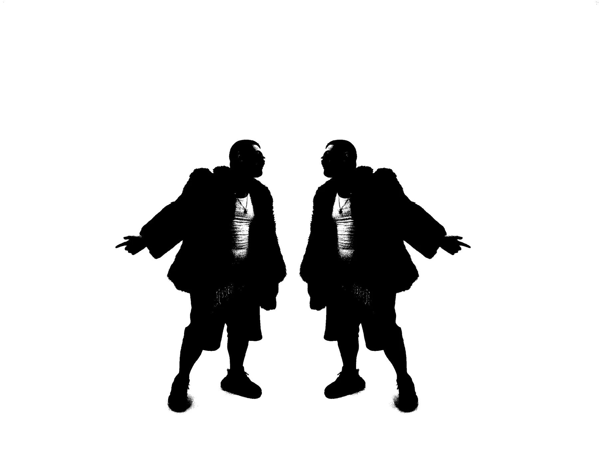

Mix
Balance, edición fina, tratamiento vocal, espacio, impacto y automatización. Una mezcla preparada para traducir dentro y fuera del estudio.
- Mezcla estéreo
- Revisiones acordadas
- Entrega WAV de alta resolución
Pedro · Ingeniero de audio titulado
Desde 2018
Sonido con intención.
Decisiones que sirven a la canción.

Me llamo Pedro. Soy ingeniero de audio titulado y llevo mezclando y masterizando desde 2018, especialmente dentro de la música urbana.
Trabajo cada proyecto desde su identidad: voces con presencia, bajos que sostienen, transitorios con impacto y un master competitivo que no aplasta la emoción. La meta no es que todo suene igual; es que tu canción suene terminada y siga sonando a ti.
Balance, edición fina, tratamiento vocal, espacio, impacto y automatización. Una mezcla preparada para traducir dentro y fuera del estudio.
El último control antes de publicar: tono, dinámica, nivel, imagen estéreo y compatibilidad con plataformas.
El recorrido completo, desde las pistas exportadas hasta el archivo final. Una sola dirección sonora y una comunicación continua.
Cada canción es distinta. El presupuesto se adapta al estado del proyecto y a lo que realmente necesita.
Tarifas por canción. Si el proyecto necesita algo distinto, lo hablamos antes de empezar.
Sesión de grabación, mezcla completa y master final preparado para distribución.
Reservar cita ↓Envíame las pistas bien exportadas y recibirás la mezcla y el master listos para publicar.
Enviar proyecto ↓Contacta conmigo para preparar un pack adaptado al número de temas y al estado del proyecto.
Consultar packs ↓Una selección de canciones y proyectos en los que he trabajado la mezcla, el mastering o ambos procesos.
Mezclas, masters y proyectos seleccionados. La reproducción se abre directamente en YouTube.
Me mandas una demo y me cuentas qué buscas. Reviso el material y te digo con honestidad qué necesita.
Recibo las pistas organizadas, referencias y notas. Confirmamos alcance, entrega y presupuesto.
Trabajo la canción, incorporo el feedback acordado y entrego los archivos finales listos para publicar.
¿Tienes un tema?
Envíame una demo, una referencia y cuéntame en qué punto está el proyecto. Para más de cinco canciones, pregúntame por los packs.